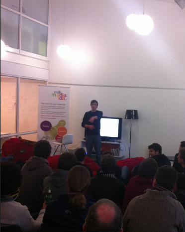

Academics:
All at Stellenbosch University:
- Started with major in business and computer sciencce.
- Switched to majoring in marketing and socio-informatics (graduated 2010).
- Graduated cum-laude in HonsBA in Socio-Informatics (2011).
- Published paper of honours research ("GenAPI: A Generic Social-Networking API") at IADIS www/internet conference. (Programmable web post on it).
- Published poster at WWW 2013 in Rio de Janeiro.
- Graduated Master of Arts in Socio-Informatics, Cum Laude (2013).
- Member of the Golden Key honors society.
- Completed Networked Life Coursera course (2012).
Other projects and stuff:
- One of the founding writers for South Africa's first online game development magazine (Dev.Mag). Wrote for 2 years, writing articles on game design and interviewing independent game developers (such as Introversion).
- Co-organiser of #hackstb: a monthly demo day and social event for the hackers of Stellenbosch.

Faint picture of me presenting the August 2012 #hackstb.
- Feature writer for a few months for award-winning Bandwidthblog, a South African technology news site.
- Served on the editorial team as computer manager for Stellenbosch University's campus newspaper, managing online distribution and IT infrastructure. Also wrote a few articles in that term.